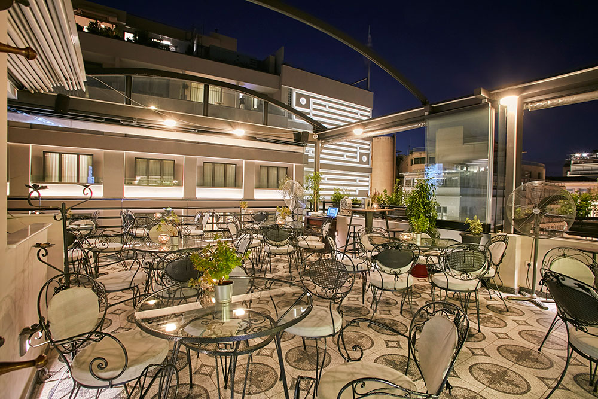

Οι γεύσεις της Αθήνας
Διαλέξτε Κατηγορία Εστιατορίου:

Top Fast Food Εστιατόρια της Αθήνας
1. Smak
Το Smak αποτελεί μια εκπληκτική επιλογή για όσους αναζητούν μια πραγματικά gourmet εμπειρία φαγητού. Το μενού του εστιατορίου αποπνέει δημιουργικότητα και φρεσκάδα, προσφέροντας πιάτα που συνδυάζουν την παράδοση με σύγχρονες γαστρονομικές τάσεις. Τα υλικά που χρησιμοποιούνται είναι υψηλής ποιότητας και φρεσκότατα, ενώ η παρουσίαση των πιάτων είναι άψογη. Η γαστρονομική δημιουργικότητα του σεφ εκτοξεύει τη γευστική εμπειρία, προσφέροντας μια συναρπαστική ποικιλία γεύσεων. Η ατμόσφαιρα του Smak είναι εξίσου εντυπωσιακή, συνδυάζοντας την κομψότητα με την άνεση. Η εξυπηρέτηση είναι προσεγμένη και ευγενική, προσθέτοντας στον γενικό χαρακτήρα του μαγαζιού. Συνολικά, το Smak αποτελεί μια εμπειρία γεύσης που ανεβάζει τον πήχη της γαστρονομικής απόλαυσης.
2. Enjoy Just Falafel
Το Enjoy Just Falafel αποτελεί μια εξαιρετική επιλογή για όσους αναζητούν νόστιμα και υγιεινά φαγητά. Η ποικιλία των φαλάφελ που προσφέρει είναι εντυπωσιακή, με υλικά υψηλής ποιότητας που προσφέρουν μια αυθεντική γευστική εμπειρία. Τα πιάτα είναι φρεσκο-prepared προετοιμασμένα με προσοχή στη λεπτομέρεια, προσφέροντας έναν απολαυστικό συνδυασμό γεύσεων και υφών. Η εξυπηρέτηση είναι φιλική και εξυπηρετική, ενώ η ταχύτητα εξυπηρέτησης καθιστά το Enjoy Just Falafel μια ιδανική επιλογή για γρήγορο και νόστιμο γεύμα. Η καθαρή και φιλόξενη ατμόσφαιρα του καταστήματος συμβάλλει στην ευχάριστη εμπειρία φαγητού. Συνολικά, το Enjoy Just Falafel αποτελεί μια προτεινόμενη επιλογή για όσους αναζητούν νόστιμο, υγιεινό και γρήγορο φαγητό σε μια φιλόξενη ατμόσφαιρα.
3. Feyrouz
Το FEYROUZ συνθέτει μια αξέχαστη γαστρονομική συναυλία που συνδυάζει με επιτυχία τη γεύση με την αυθεντικότητα. Το μενού του εστιατορίου αναδεικνύει την πλούσια κουζίνα της Μέσης Ανατολής, προσφέροντας πιάτα που εκτοξεύουν τις αισθήσεις. Οι γεύσεις είναι πλούσιες και ποικίλες, με κάθε πιάτο να αναδεικνύει την προσεγμένη προετοιμασία και τη χρήση αυθεντικών μπαχαρικών. Το FEYROUZ δεν απλά σερβίρει φαγητό, αλλά προσφέρει μια ταξιδιάρικη εμπειρία, με τον κάθε μπουκιά να είναι ένα ταξίδι στις γεύσεις της Ανατολής. Η ατμόσφαιρα του εστιατορίου είναι ζεστή και φιλόξενη, δημιουργώντας το ιδανικό περιβάλλον για μια ρομαντική βραδιά ή μια ευχάριστη συνάντηση με φίλους. Η εξυπηρέτηση είναι άψογη, προσθέτοντας στη συνολική εμπειρία. Συνολικά, το FEYROUZ είναι μια κορυφαία επιλογή για όσους αναζητούν αυθεντική και νόστιμη μεσογειακή κουζίνα.
Για Περισσότερα Καταστήματα
Top Εστιατόρια Ελληνικού Φαγητού της Αθήνας
1. Thes "Greek Creative Cuisine"
Το Thes "Greek Creative Cuisine" είναι μια εξαιρετική επιλογή για όσους αναζητούν μια σύγχρονη προσέγγιση στην ελληνική κουζίνα. Το μενού του αντλεί έμπνευση από την παράδοση, αλλά την προσαρμόζει με δημιουργικότητα και καινοτομία. Οι σεφ του Thes δημιουργούν πιάτα που είναι απολαυστικά τόσο στην όψη όσο και στη γεύση. Η προσεγμένη παρουσίαση και η χρήση φρέσκων, τοπικών υλικών ενισχύουν την αυθεντικότητα των γεύσεων. Η ατμόσφαιρα του εστιατορίου είναι εξίσου εντυπωσιακή, συνδυάζοντας την κομψότητα με την φιλοξενία. Το Thes δημιουργεί μια ιδανική ατμόσφαιρα για δείπνα με φίλους, οικογενειακές εκδηλώσεις ή ρομαντικές στιγμές.
2. Dimitris And Savvas of Athens
Το "Dimitris And Savvas of Athens" είναι μια ένα γαστρονομικό έργο τέχνης στην καρδιά της Αθήνας. Η κουζίνα του εστιατορίου αποπνέει μια γνήσια αίσθηση της ελληνικής παράδοσης, συνδυάζοντας τη φρεσκάδα των τοπικών υλικών με τον ταλαντούχο σχεδιασμό των πιάτων. Οι σεφ δημιουργούν εκλεπτυσμένες γεύσεις που αναδεικνύουν την ποικιλία της ελληνικής κουζίνας. Η προσεγμένη παρουσίαση και η προσωπική πινελιά στη γαστρονομική εμπειρία δημιουργούν έναν πραγματικό πειρασμό για τους λάτρεις της καλής κουζίνας. Η ατμόσφαιρα του εστιατορίου είναι ευχάριστη και ζεστή, διαθέτοντας ένα όμορφο περιβάλλον για δείπνα με φίλους ή οικογενειακές συναντήσεις. Η εξυπηρέτηση είναι προσιτή και φιλόξενη, προσθέτοντας στην συνολική εμπειρία της επίσκεψης. Το "Dimitris And Savvas of Athens" αντιπροσωπεύει μια αληθινή γευστική απόλαυση που αξίζει να δοκιμαστεί.
3. A Little Taste Of Home
Το "A Little Taste Of Home" παρέχει εξαιρετική φιλοξενία και αυθεντικές γεύσεις. Η κουζίνα του αναδεικνύει τον χαρακτήρα της οικογενειακής, σπιτικής μαγειρικής, προσφέροντας πιάτα που αγκαλιάζουν την καρδιά και ξυπνούν νοσταλγικές αναμνήσεις. Η γευστική εμπειρία στο "A Little Taste Of Home" είναι σαν ένα ταξίδι στις αυθεντικές γεύσεις της παραδοσιακής κουζίνας. Τα πιάτα είναι προετοιμασμένα με μεράκι και προσοχή στη λεπτομέρεια, χρησιμοποιώντας φρέσκα υλικά που αναδεικνύουν την αγάπη για το φαγητό. Η ατμόσφαιρα στο κατάστημα είναι ζεστή και φιλική, δημιουργώντας αίσθηση οικειότητας. Το προσωπικό είναι φιλόξενο και προσιτό, καθιστώντας την επίσκεψη σαν να βρίσκεσαι στο σπίτι ενός φίλου. Συνολικά, το "A Little Taste Of Home" προσφέρει μια γλυκιά απόδραση σε μια αυθεντική, οικεία γευστική εμπειρία.
Για Περισσότερα Καταστήματα
Top Εστιατόρια Bistro της Αθήνας
1. Jonah's Restaurant
Το Jonah's Restaurant αναδεικνύεται ως μια λαμπρή επιλογή εστιατορίου bistro. Η κουζίνα του συνδυάζει μαεστρία, παράδοση και καινοτομία, προσφέροντας μια ευφάνταστη γκάμα από πιάτα που κεντρίζουν το ενδιαφέρον και την απόλαυση. Η ποιότητα των υλικών είναι εμφανής, ενώ η προσεγμένη παρουσίαση των πιάτων εντυπωσιάζει τόσο αισθητικά όσο και γευστικά. Το μενού δεν περιορίζεται σε μια συγκεκριμένη κουζίνα, αλλά ανακαλύπτει γεύσεις από διάφορες παγκόσμιες κουζίνες, προσφέροντας ένα ταξίδι γευσιγνωσίας. Η ατμόσφαιρα στο Jonah's Restaurant είναι κομψή και χαλαρή, κατάλληλη για επίσημες εκδηλώσεις ή ρομαντικά δείπνα. Η εξυπηρέτηση είναι υποδειγματική, επιδεικνύοντας επαγγελματισμό και φροντίδα στην εμπειρία των πελατών. Συνολικά, το Jonah's Restaurant αποτελεί μια πολυτελή επιλογή για όσους αναζητούν υψηλής ποιότητας Ιταλικό φαγητό.
2. Oroscopo
Το OROSCOPO αποτελεί μια γαστρονομική ζωή στην καρδιά της πόλης. Η κουζίνα του εστιατορίου αποπνέει την αυθεντικότητα και τη φρεσκάδα των υλικών. Οι σεφ του OROSCOPO δημιουργούν με μεράκι και δημιουργικότητα, ενώ η ποικιλία του μενού αντικατοπτρίζει την επιδεξιότητα τους στην τέχνη της γαστρονομίας. Από τις πρώτες ύλες μέχρι τον τρόπο σερβιρίσματος, το OROSCOPO δημιουργεί μια ολοκληρωμένη εμπειρία φαγητού. Η ατμόσφαιρα του εστιατορίου είναι εξίσου μαγευτική, συνδυάζοντας τον πολυτελή σχεδιασμό με τη ζεστασιά του χώρου. Η εξυπηρέτηση είναι επαγγελματική και προσεγμένη, δημιουργώντας μια φιλική ατμόσφαιρα που καθιστά κάθε επίσκεψη μια ευχάριστη εμπειρία. Συνολικά, το OROSCOPO αναδεικνύεται ως μια εξαιρετική επιλογή για όσους αναζητούν υψηλής ποιότητας φαγητό σε μια εκλεπτυσμένη ατμόσφαιρα.
3. V1935 Roof Garden
Το V1935 Roof Garden αποτελεί μια αναπάντεχη, κορυφαία επιλογή για τους λάτρεις της γαστρονομίας. Η εντυπωσιακή θέα από το roof garden συνδυάζεται με μια εκλεπτυσμένη γαστρονομική εμπειρία που απογειώνει τις αισθήσεις. Το μενού του V1935 Roof Garden είναι μια εκπληκτική συνύπαρξη της τοπικής και διεθνούς κουζίνας, προσφέροντας πιάτα που συνδυάζουν την ποιότητα των υλικών με τη δημιουργικότητα στη γεύση. Η ατμόσφαιρα στο roof garden είναι μαγική, κατάλληλη για ρομαντικά δείπνα ή κοκτέιλ με φίλους. Η εξυπηρέτηση είναι εξαιρετική, με το προσωπικό να δημιουργεί μια φιλική και φιλόξενη ατμόσφαιρα.